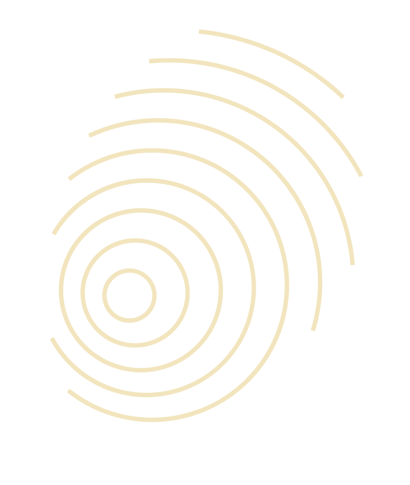
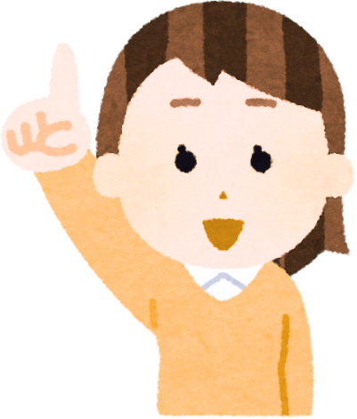

Building a Support Network
Learn how to recognize when you need extra help, build a team around you, and find the resources you can actually trust.
Work through this module at your own pace. Tap the quiz questions when they appear — there are no wrong answers.
What We'll Explore Together
By the end of this module, you'll be able to:

Our Journey Today
- 01 How Eczema Affects Your Life
- 02 Recognizing When to Ask for Help
- 03 Talking to Your Doctor
- 04 Building Your Support Team
- 05 Support at Home and Work
- 06 Navigating Stigma and Disclosure
- 07 Resources & Key Takeaways
How Eczema Affects Your Life
The impact goes far beyond your skin.
Recognizing When to Ask for Help
Some signals are worth taking seriously.
Sadness or hopelessness that doesn't lift, even when your skin is calmer.
Withdrawing from social activities or relationships because of how your skin looks or feels.
Significantly disrupted sleep or eating patterns over more than a few weeks.
Believing things won't get better, or that there's nothing more to try.
Talking to Your Doctor
Your dermatologist or family doctor can open the door to support.
Say clearly: "I'd like to talk about how this is affecting me emotionally." Don't wait for them to ask — they may not know to.
Don't save it for the end of the appointment. Raise it at the start so there's time for a real conversation.
Write down what you've been feeling before your visit. Notes help your doctor understand the full picture — and show that this matters to you.
Your doctor can connect you to a counsellor, psychologist, or mental health service. You don't have to find this on your own.

Your Support Team
You don't have to build it alone — and it doesn't have to be perfect.
Your dermatologist and family doctor — for skin care and for referrals to other supports.
Counsellors, psychologists, and therapists — for anxiety, low mood, and coping strategies.
Family and close friends — for day-to-day practical support and for people who genuinely care.
Online eczema communities and peer support — people who live with eczema and genuinely get it.
Support at Home and Work
People want to help — they often just don't know how.
Be specificVague requests ("just be more supportive") are hard to act on. Give someone a concrete task: "Remind me to moisturize before we go out." or "Can we choose a fragrance-free venue?" The more specific the ask, the easier it is to say yes.
Work and schoolYou are not obligated to disclose a medical condition to colleagues or classmates. If you do choose to disclose, you may be entitled to accommodations. You decide what to share, and with whom.
Help with triggersAsk family or housemates to switch to fragrance-free products, keep rooms cooler, or avoid smoke and strong scents. These are small asks with real impact — and they're easier to make when framed as "this really helps my skin."

Thinking it Through
Question 1 of 4
Navigating Stigma and Disclosure
You get to control the conversation — and its limits.
A simple, effective response
"It's just eczema. It's a common skin condition. It's not contagious."
Thinking it Through
Question 2 of 4
Resources You Can Trust
Evidence-based and designed for people with eczema.
eczemahelp.ca
Canadian patient resources, advocacy, and practical care guides for all ages.
nationaleczema.org
Research summaries, peer support, and tools including the EczemaWise tracking app.
Available 24/7 in Alberta — free and confidential.
Call or text: 1-877-303-2642
Thinking it Through
Question 3 of 4
Thinking it Through
Question 4 of 4
Let's Recap! Key Takeaways
- › Eczema can affect your emotional well-being, your relationships, your work, and your self-esteem. These are normal responses to a chronic condition.
- › It may be time to ask for extra help if you feel down most days, are avoiding people, are sleeping or eating poorly, or feel hopeless.
- › Your family doctor or dermatologist can refer you to mental health support — you don't have to find it on your own.
- › Your support team can include doctors, counsellors, family, friends, online communities, and peers who share your experience.
- › At work or school, disclosure is your call. You are not obligated to share your diagnosis.
- › If someone asks an unkind question: "It's just eczema. It's a common skin condition. It's not contagious."
- › Reliable Canadian resources: Eczema Society of Canada (eczemahelp.ca) and the National Eczema Association (nationaleczema.org). The AHS Mental Health Helpline (1-877-303-2642) is available 24/7.
Sources
- Silverberg JI, et al. Patient burden and quality of life in atopic dermatitis in US adults. Ann Allergy Asthma Immunol. 2018;121(3):340-347.
- Drucker AM, et al. The burden of atopic dermatitis: summary of a report for the National Eczema Association. J Invest Dermatol. 2017;137(1):26-30.
- Halvorsen JA, et al. Suicidal ideation, mental health problems, and social impairment are increased in adolescents with eczema. J Invest Dermatol. 2014;134(7):1847-1854.
- Dalgard FJ, et al. The psychological burden of skin diseases: a cross-sectional multicenter study among dermatological out-patients in 13 European countries. J Invest Dermatol. 2015;135(4):984-991.
- Eczema Society of Canada. Patient resources. eczemahelp.ca.
- National Eczema Association. Patient resources and EczemaWise app. nationaleczema.org.
- Alberta Health Services. Mental Health Helpline. 1-877-303-2642.